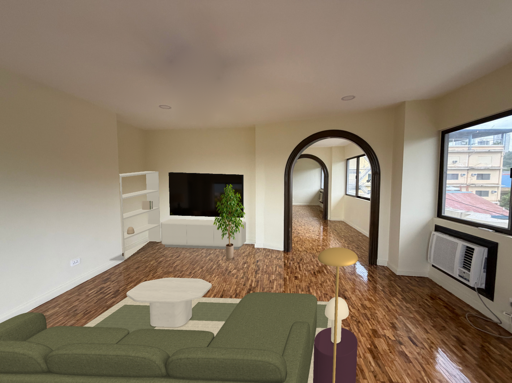
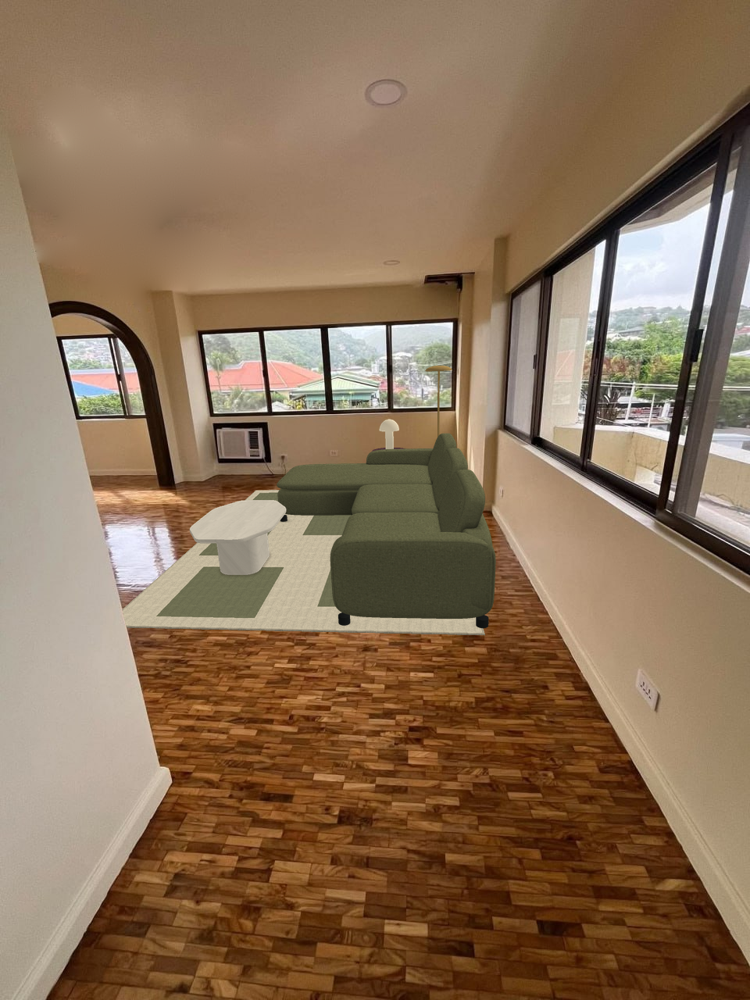

Living room · Design B
Olive Lounge
An olive sectional with an integrated chaise, pale stone and rounded ivory furniture.
OliveOatmealIvoryPlum


307 × 1,161 mmRecess depth × run along the wall, from the drawing.
2,182 mmTV-wall span beside the shelf zone, from the drawing.
2,850 mm main spanProposed integrated sectional, with a 1,710 mm chaise depth.
These views preserve the original room photographs and use the same proposed furniture layout. The owner has confirmed the recess’s existence and location. Drawing dimensions are not an on-site survey; camera calibration and exact retail-product fit remain unverified. Concealed furniture surfaces are proposed design details.